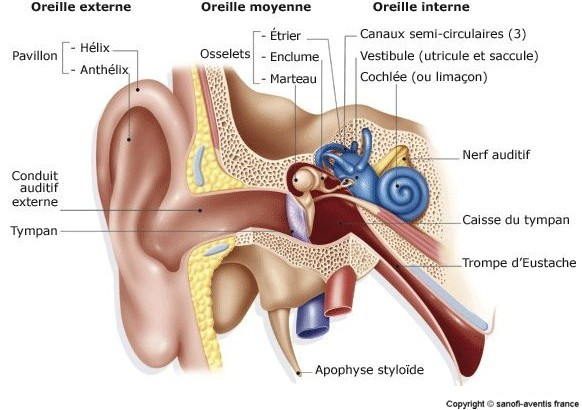

Les otites
DefinitionL'otite est une inflammation de l'oreille moyenne, liee ou non e une infection.
Il y a 2 types d'otites :

L'otite aigue est une inflammation aigue de l'oreille moyenne, liee e une infection, sa guerison est sans sequelles.
Signes cliniques
Examens complementaires
Complications
Traitements
L'otite chronique est une inflammation chronique de l'oreille moyenne.
Il y en 3 formes :
L’otite sereuse
Signes cliniques
Examens complementaires
Traitements
L'otite moyenne chronique
L'otite moyenne chronique est une inflammation chronique de l'oreille moyenne qui se caracterise par une guerison avec sequelles.
Le cholesteatome
Le cholesteatome est une inflammation chronique de l'oreille moyenne caracterise par une masse formee de cellules infiltrees de cholesterol.
Signes cliniques
Examens complementaires
Traitements
Voir aussi :
|
Accueil
| Sciences infirmieres |
Soins et techniques
|
Pharmacologie et Therapeutiques
|
Examens
biologiques |
Examens medicaux
| Version imprimable e Samir ISP tous droits reserves design : xgraphik.com modifie par M. Pitte |
 haut
de page
haut
de page